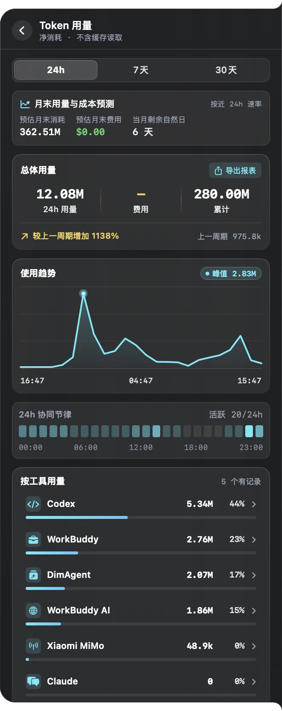
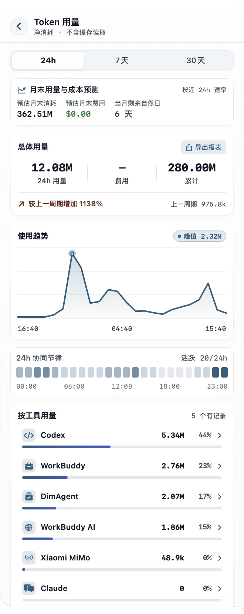
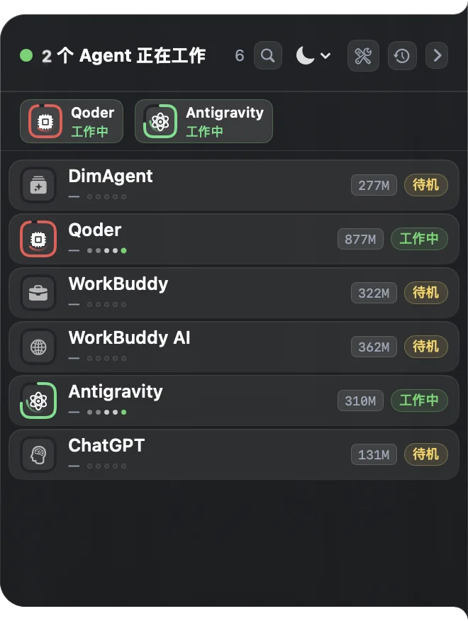
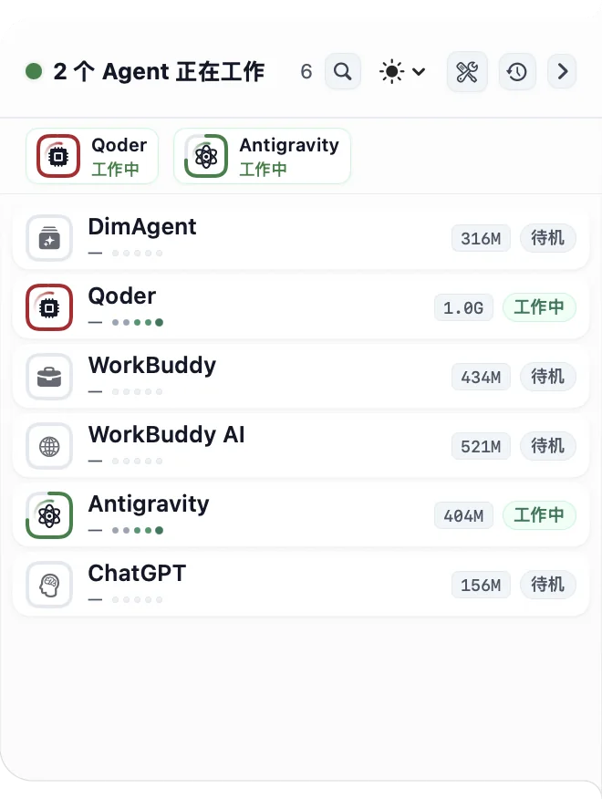
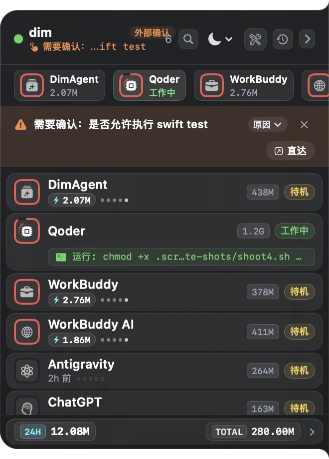
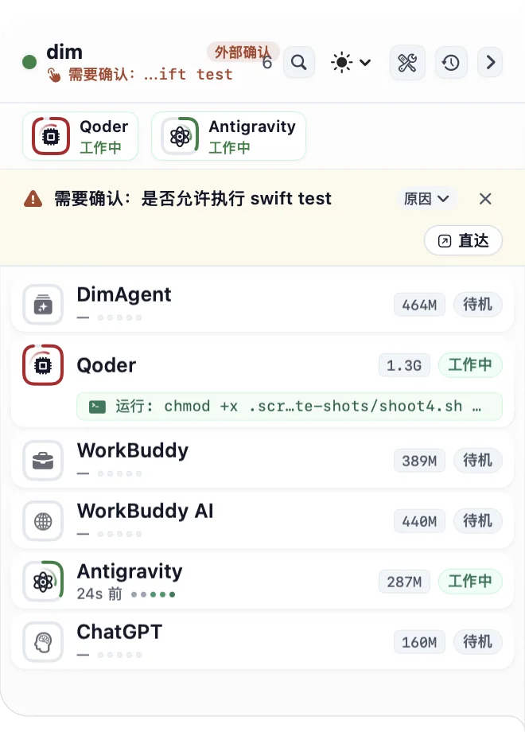
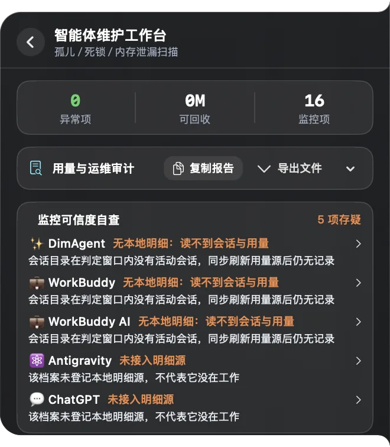
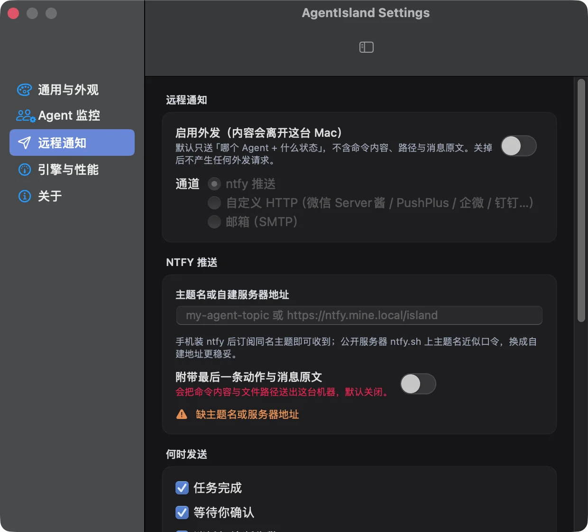
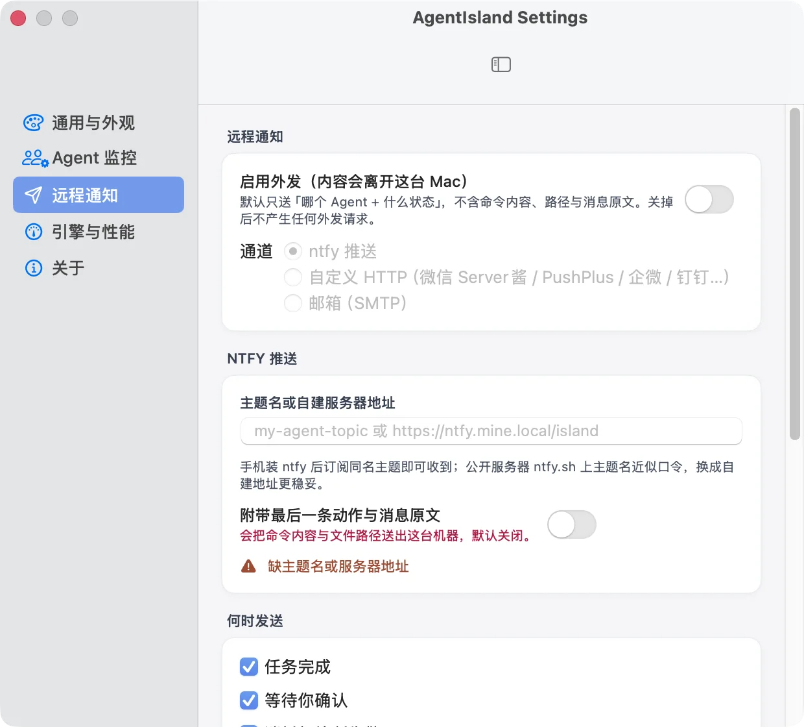

查看 Token 与费用
按工具和模型查看用量、费用、近期趋势与预算进度，也可查看月末用量预测。
各工具可读取的数据不同；没有明细时会明确标出，不用估算值填补。
macOS · 灵动岛风格 · 本机只读监控
同时使用 Claude Code、Codex、Cursor 等工具时，在屏幕边缘查看谁在工作、谁需要你确认，以及用量变化；需要处理时，直接回到对应窗口。


AgentIsland 综合进程、文件活动和会话事件判断状态。单纯打开应用不会被当成正在工作；缺少完成证据时，也不会直接报为已完成。
Token 用量突增、长时间高负载、异常后台进程或内存激增时，还会显示额外告警。
展开卡片可查看 Agent 列表与详情，也能跳回对应的图形界面或终端。卡片可拖到屏幕四边，多屏和全屏空间也会跟随使用中的屏幕。


查看 Agent 最近在做什么、用量如何，以及当前监控数据是否完整。


按工具和模型查看用量、费用、近期趋势与预算进度，也可查看月末用量预测。
各工具可读取的数据不同；没有明细时会明确标出，不用估算值填补。

工作台会说明会话来源是否可读、是否找到本地用量明细，以及哪些工具尚未接入明细。
也可运行 agentisland doctor 查看判断依据。


可通过 ntfy、自定义 HTTP 模板或邮箱，把完成、待确认和异常提醒发到其他设备。
远程通知默认关闭。命令、文件路径等活动详情只有在你明确启用后才会发送。
agentisland 命令行工具随应用提供，可在终端或脚本中查看状态、排查监控、汇总用量和生成报告。
status | 查看 Agent 状态；-w 持续监控，--json 供脚本使用 |
|---|---|
top | 类 htop 的全屏看板，q 退出、r 刷新、c 一键清理 |
tokens | 查看近期用量、费用和预算进度 |
doctor | 检查 Agent 监控数据并查看判断依据 |
check / clean | 检查异常进程；清理前可用 -n 预览 |
open | 展开灵动岛，或打开指定 Agent 与看板 |
notify | 向灵动岛投递完成、待确认或告警事件 |
report | 生成 Markdown / CSV / JSON 运维报告 |
selftest | 运行内置检查，验证核心判定逻辑 |
🤖 AgentIsland 智能体运行态快照 (12 个条目)
状态 智能体 PID CPU 内存 会话 24h 用量 24h 费用 最近活动
───────── ──────────────── ─────── ────── ──────── ───── ────────── ──────── ──────────────────────
🟡 待机 ✨ DimAgent 37215 — 227M 0 — — 无记录
🟢 工作中 🖥️ Qoder 31179 — 1.1G 2 — — 运行: swift build 1s前
🟡 待机 💼 WorkBuddy 87416 — 451M 0 — — 无记录
🟡 待机 💼 WorkBuddy AI 90052 — 337M 0 — — 无记录
⚪️ 离线 🧩 ZCode - - - 0 — — 无记录
🟡 待机 ⚛️ Antigravity 96408 — 251M 0 — — 2h 前
🟡 待机 💬 ChatGPT 92565 — 139M 0 — — 无记录
本机实样，仅把最后一列的在跑命令换成 swift build、裁掉了三行离线项。
内置 25 个工具档案，并会发现已安装的应用和命令行工具。你也可以在设置中按进程名和会话目录添加自定义 Agent。
运行状态和 Token 明细的覆盖范围不同，具体取决于工具提供的本地数据。AgentIsland 只读解析所需字段，不展示对话正文或修改会话数据，也不需要辅助功能或完全磁盘访问权限。
AgentIsland 在本机只读查看进程和会话数据。远程通知默认关闭；开启后也可预览实际发送内容。